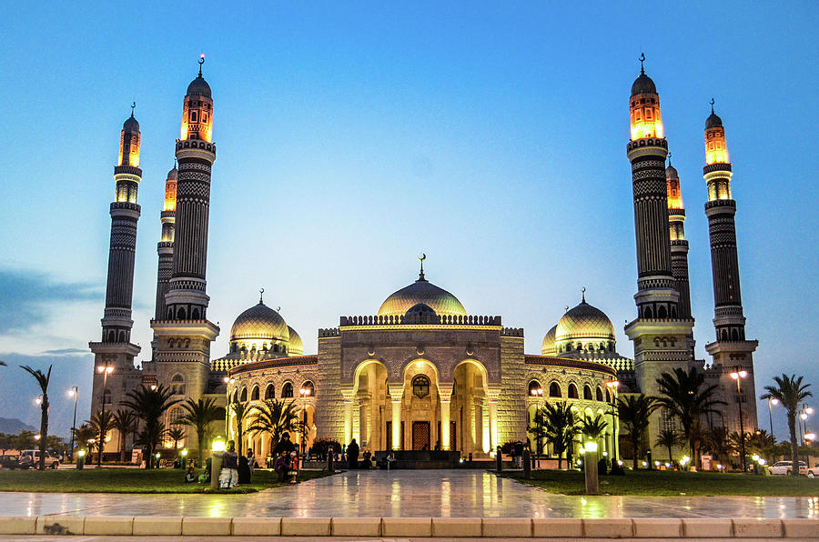

Yemen is
one of the most important countries in the middle east that has an interesting
cultural history.
Yemen has interesting elements of the ancient world, and some unique natural wonders too.
It has a wealth of Beauty and Culture which can attract people from all over the world to visit there.
Here
is a list of the five most famous landmarks:
Stone house (Dar al-Hajar)
Dar Al-Hajar (Rock
Palace). Located in
northwest of Sana'a in the middle of Wadi Dhahr, 25 km away
from
the city center. The first mention of Wadi Dhahr was in the seventh century B.C. as it was inhabited
by
prehistoric people.
It is the most popular symbol of Yemen seen on posters and in magazines.
The fame of the valley goes back many ages ago, as indicated by drawings found on the valley rocks,
which led archeologists to conclude that the valley was inhabited before recorded history. The rock
palace was built by al-Imam Mansour, dating back to 1786. It was once an old Jewish
community
situated on a huge protruding rock. Its ridges were carved by the people in the past for
fortification.
The only way in and plausible way out is a wide wooded Gate that gives access to this deserted
village.
Currently, the building houses a museum. This pattern of Yemeni architecture is a seven-storey
building
with 35 rooms, pantries and kitchens. Around the palace there are five ruined watch towers.

The Otherworldly Socotra Island
This is one of the world heritages sites of UNESCO in Yemen. This island is famous worldwide for its alien planet like beauty and features. It has amazing rugged terrain filled with rocks, blue green sea, sandy beaches some of which has massive sand dunes. But special mention must be done to those Dragon Blood Trees popularly known as Bottle Trees. These amazing trees have thick stems, and the upper part is raher slim than the lower portion. When a tree is full grown and has its leaves and branches it certainly looks something out of the world. Visitors flock to this island in Yemen to see this natural wonder.

Shaharah Bridge
If you love architectural wonders then you should pay a visit to Shaharah in north west Yemen to see this old architectural wonder. Shaharah is a village situated in a mountainous region. This bridge was built in 17th century over a deep gorge. It was a limestone structure that still holds and strikes awe to whoever sees it.

Al-Saleh Mosque
Al-Saleh mosque is located in the capital city of Yemen, Sanaa. The truly impressive cultural and historical site is very attractive for the tourists. Getting to the mosque is very easy, and it can be seen from far away within the town. As you get closer to the beautiful facades of AL-Saleh mosque you will be a witness to its amazing Yemeni architectural style, which features four 160 meters-tall minarets and two smaller minarets, four huge domes as well. And the whole building is decorated by lush wooden ornaments and carvings, and the nearby green gardens are picturesque.
Cairo Castle
It is a historical castle in the ancient city of Taiz. Cairo Castle is undoubtedly one of the country’s most impressive structures. Dating back to the early 12th Century, the castle was built under the orders of Sultan And Allah ibn Muhammad al-Sulayhi. Situated upon a hilltop, the Castle was known for its beautiful gardens. Despite the uncertainty regarding its current status, the castle was one of the country’s most iconic symbols

To explore more beautiful landmarks Click here